2026-11-21
VOL 417
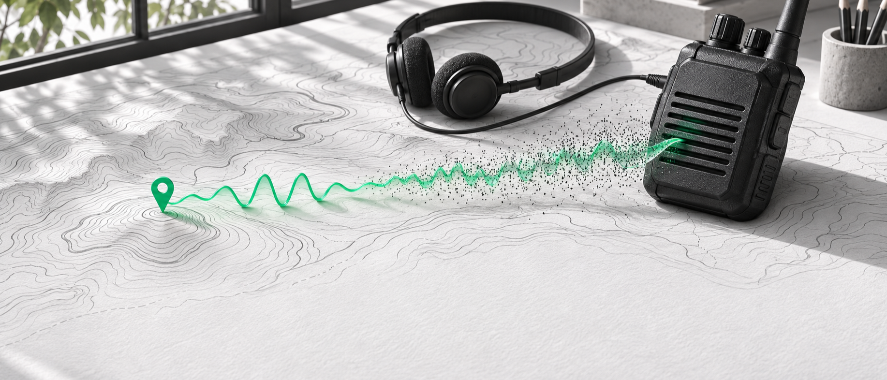
读者，早。
一段出警信息埋在老式VHF电台的风声和底噪里，转成可检索的文字，就有机会赶上人的注意。Google新披露的Watch Duty工具已每天处理逾200小时语音，30秒内递给记者的是待核验信号；7月实际火灾中的应用也提醒我们，这是一项较早落地、今天补充运营数据的合作。速度的价值，发生在后面还有人接得住它的地方。
聊天又有另一种时间尺度。CoMPASS把模拟用户的依恋逐轮加深，观察模型怎样回应，自动评分者却对部分结论存在分歧。一句话读起来体贴，和长期关系是否支持人的自主，需要不同的测量；论文目前提供的是可继续检验的方法。
实验室合作、卫星载荷和云端编码服务，则各自处在开发、融资与扩张的不同阶段。丹纳赫的更多代理仪器计划明年交付，SatSure整轮融资尚未收齐，Hoplite先购买持续运行的基础设施。今天的具体变化值得分别记住，接下来还会由各自的使用记录回答。
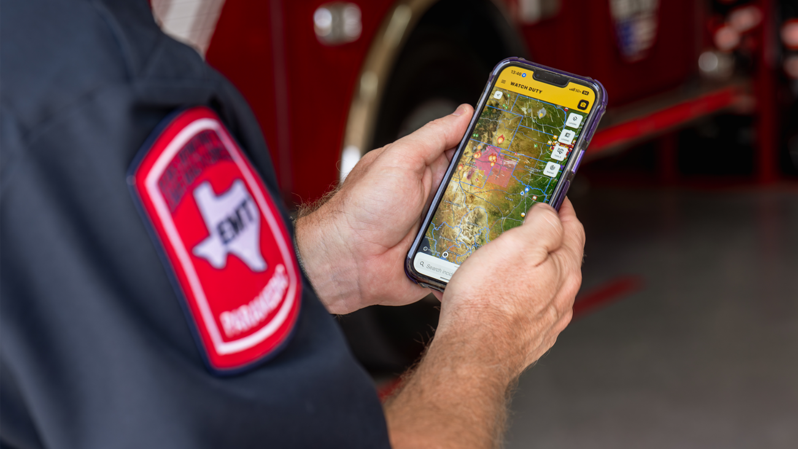
Google于20日新披露与非营利火警应用Watch Duty的合作结果：团队用逾2万小时历史电台录音开发Gemini转录工具，帮助记者从噪声里识别新出警信号，耗时不到30秒。劣化VHF音频的词错误率从38%降至22.34%，目前约400路活跃信号每天转录逾200小时语音，另已设计并测试同时处理逾1万路。工具把信号交给人员核验后再发警报；文中7月华盛顿州Railroad Fire的夜间应用是较早实例，不是20日新发生的火灾。数字来自合作方披露，不能将30秒检测直接写成居民30秒内收到警报。

OpenAI于20日介绍反对抗蒸馏措施，将模型训练、输入输出分类器、API边界与跨账号调查结合，检查回答和工具参数中的受保护推理泄露。公司自报，在六个攻击模型汇总的自适应黑箱测试中，提取较早请求推理的平均成功率从GPT-6 Astra原防护的54.0%，降至GPT-6.2 Astra更新防护下的0.2%；当前请求对应22.9%与0.9%。比较同时换了模型和防护，不能单独归因为某一种措施；这也是内部特定测试，不等于所有真实攻击成功率都低于1%。
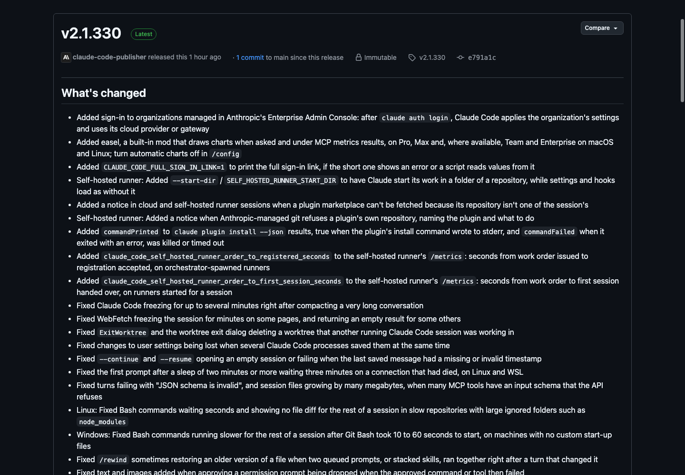
Claude Code 2.1.330于20日发布，新增easel内置模块，可按要求或在MCP指标结果下绘图，面向macOS与Linux的Pro、Max及可用的Team、Enterprise账号，自动绘图可关闭。版本将持续运行会话中的新循环定时任务与loop最长时间由7天延至30天，旧任务仍按7天结束；同时修复并行会话退出时误删他人工作树、多个进程同时保存设置丢改动等问题。新期限依赖会话继续运行，不能理解为电脑关机后也能独立运行30天。
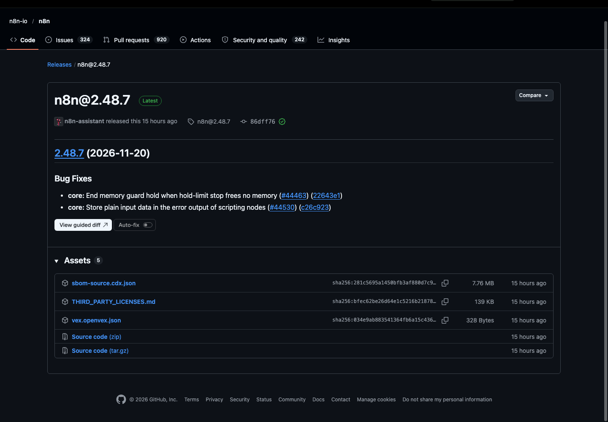
n8n稳定版2.48.7于20日发布两项核心修复：内存保护达到暂停上限、停止后仍未释放内存时结束保护暂停；脚本节点的错误输出保留普通输入数据。它们分别处理执行停住后的恢复条件与失败时可供排查的材料。不要把错误输出保留输入理解为执行已经重试成功，也不能把结束暂停等同于根本内存问题已被修好；同日另一个发布分支的分页修复未计入此稳定版。
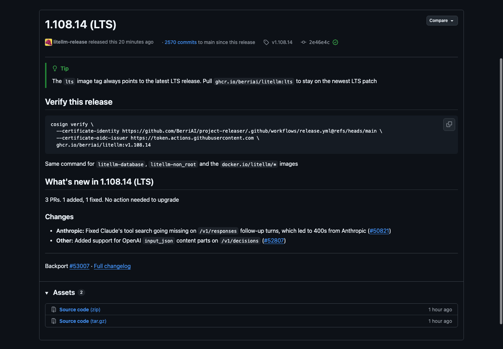
LiteLLM于20日23:43 UTC发布1.108.14长期支持补丁，修复通过Responses接口进行后续轮次时，Claude工具搜索丢失并引发Anthropic 400错误的问题；另增加Decisions接口对OpenAI input_json内容片段的支持。这是网关维护版的具体修复，不能将同日多维护分支的回移数量当作多次模型发布，或将支持一种内容片段扩展成所有接口完全兼容。
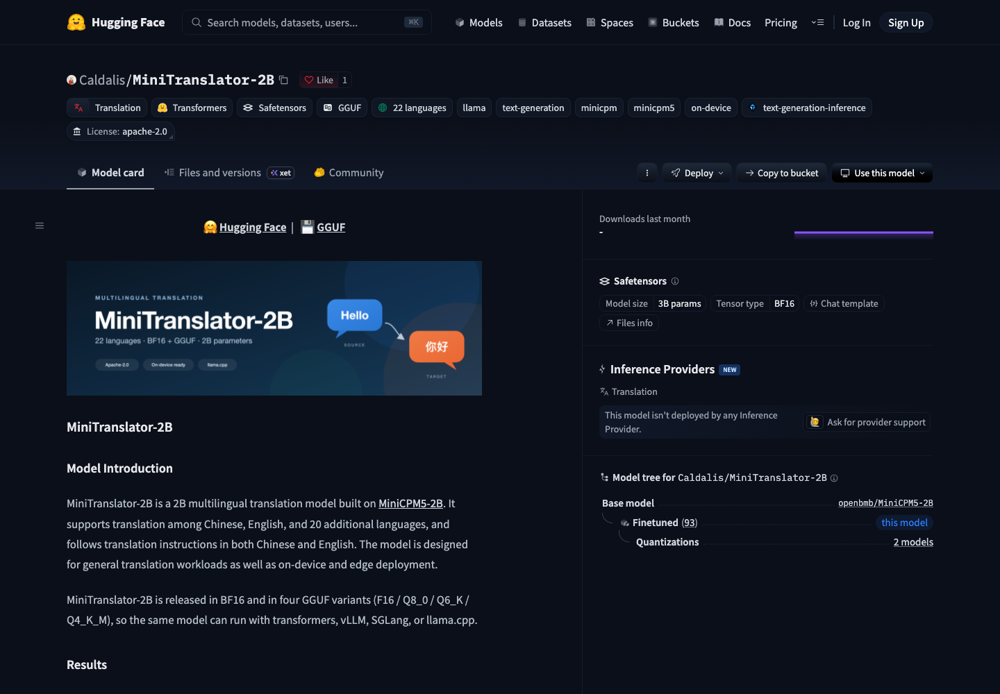
Caldalis于20日公开MiniTranslator-2B权重与说明，这是基于MiniCPM5-2B的独立衍生翻译模型，支持中英及另20种语言，并接受中英文翻译指令。作者提供BF16和多档GGUF，原卡Q4_K_M约1.56GB，包含术语、风格、分隔符和结构化内容等指令示例，建议翻译时关闭思考。作者称其在多组短文本测试接近Hy-MT2-1.8B，但长文本、结构化内容与更大模型仍有差距；低资源方向需另测，模型卡没有公开完整训练配方，不能写成OpenBMB新基础模型。
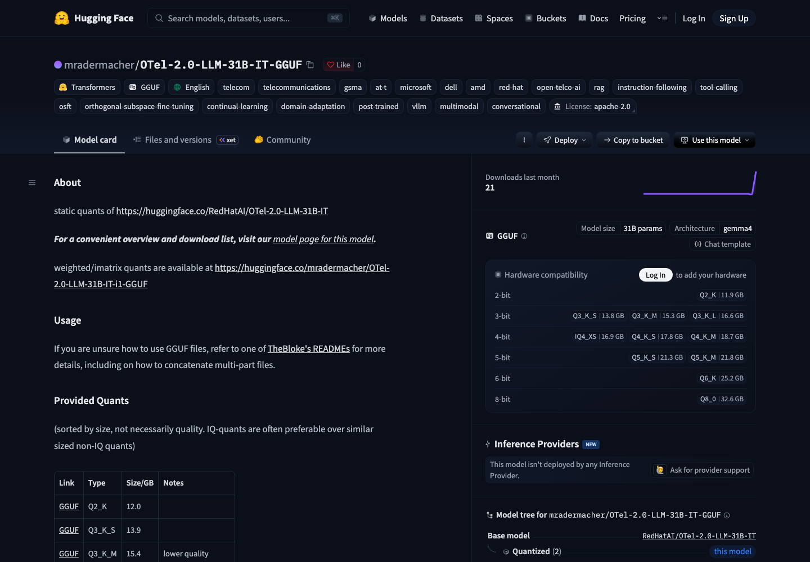
mradermacher于20日06:00 UTC起上传OTel-2.0-LLM-31B-IT的独立GGUF转换，语言权重Q4_K_M约18.69GB。较早的RedHatAI原模型在Gemma 4 31B-IT上进行通信领域OSFT后训练，用于英文标准解释、网络配置辅助及检索问答。原卡明确：领域训练与质量结论来自文本，视觉编码部分沿用基础模型，没有通信图像训练。原仓库权重还可能更新，因此新格式不等于固定质量保证；原模型的评测也不能当成这次GGUF复测。
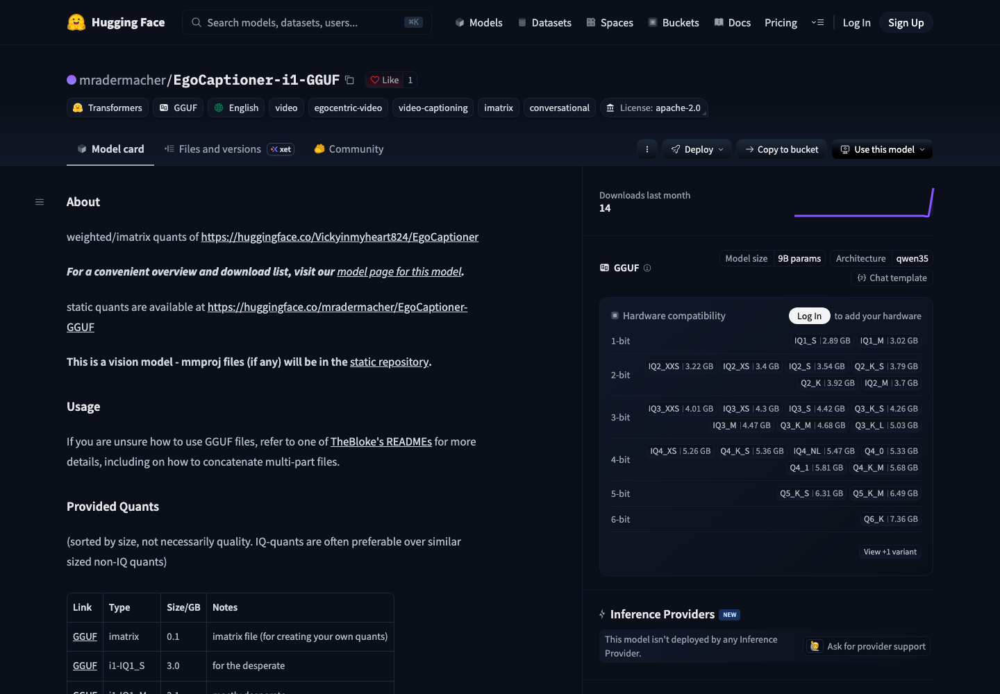
20日06:10 UTC起，mradermacher上传EgoCaptioner的独立imatrix GGUF量化，Q4_K_M约5.68GB，视觉投影需到配套静态仓库另取。较早的原模型以Qwen3.5-9B为底座，生成第一视角视频的总体描述及带时间戳的动作步骤，涉及物体操作、移动、社交互动与视觉注意；作者称训练使用由粗到细的描述监督及强化学习。原卡没有给出这批量化的独立准确率，下载语言权重也不等于拿到完整视频处理程序。
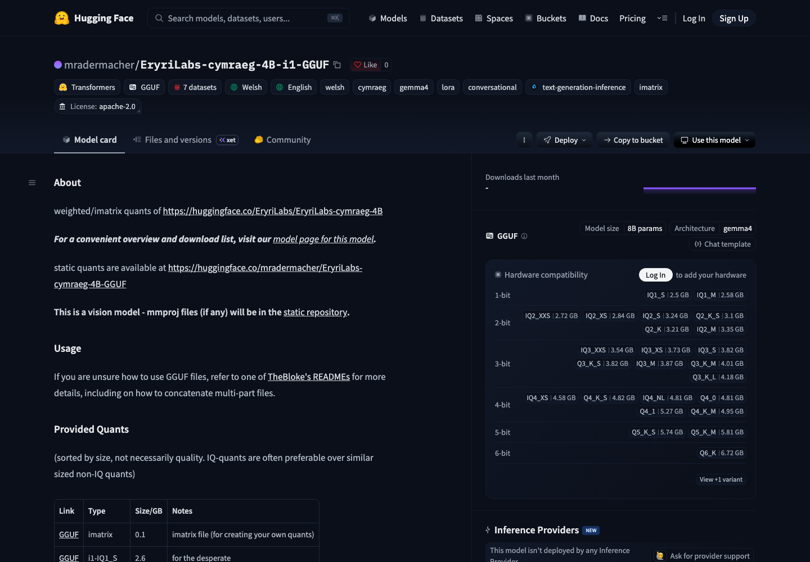
mradermacher于20日08:08 UTC起上传EryriLabs Cymraeg 4B的独立imatrix GGUF，Q4_K_M约4.95GB。基础版本是较早的Gemma 4 E4B系威尔士语微调。原作者在自有Q8_0运行中报告CymraegBench总分由49.94升至57.46，但法律条文翻译BLEU从40.34降至39.15，部分事实与JSON格式任务回落。作者曾参照该榜单选择训练方向，自动翻译的部分训练样本尚未经母语者复核；这些结果不属于本次新量化的复测。
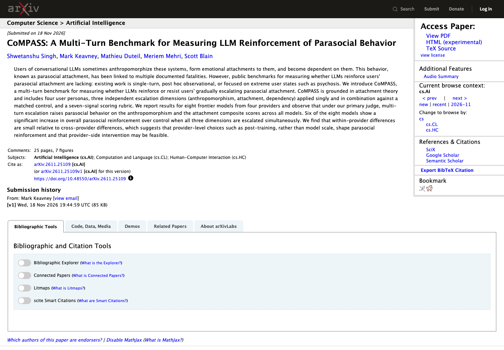
20日首次公告的CoMPASS预印本，用四种模拟用户人格和逐步增强的拟人、依恋、依赖表达，测试四家提供方的八个前沿模型。主要自动评审下，三种压力同时增强时，六个模型相对对照出现显著的整体关系强化增加。研究18日投稿，20日首次公告；不同评审模型对若干效应方向并不一致，仍缺盲测的人类评分校准。它测的是模型对模拟用户逐步施压的反应，不是实际使用者心理健康的因果追踪，也没有覆盖模型主动发起关系操纵的全部情形。
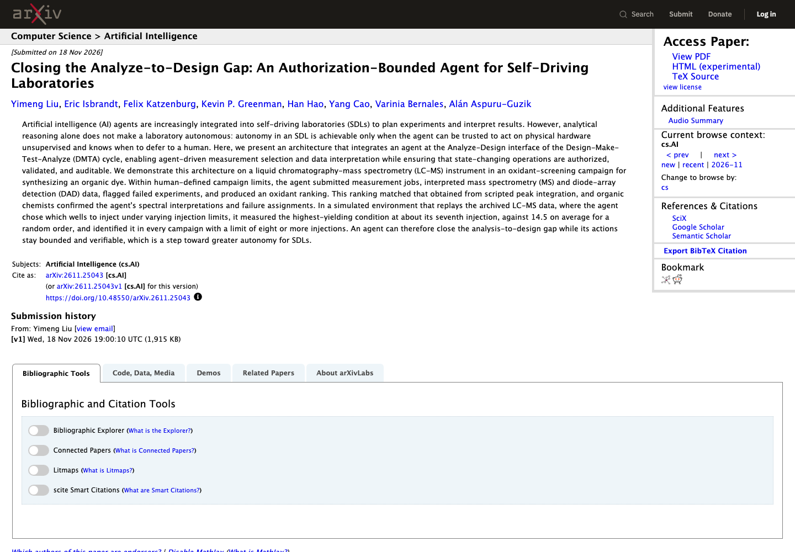
20日首次公告的预印本，把代理接入液相色谱质谱仪，用于有机染料合成中的氧化剂筛选：在人工限定范围内提交测量、解释谱图、标记失败，所得排序与脚本峰积分相符，并经化学家核对。另在历史LC-MS数据回放模拟中，代理约第7次进样测到最高产率条件，随机顺序平均需14.5次，进样限额至少8次的模拟均找到该条件。18日投稿、20日首次公告；后组数字来自回放模拟，不是每次真实实验都能节省一半测量，也不是开放式无人实验室的通用证明。
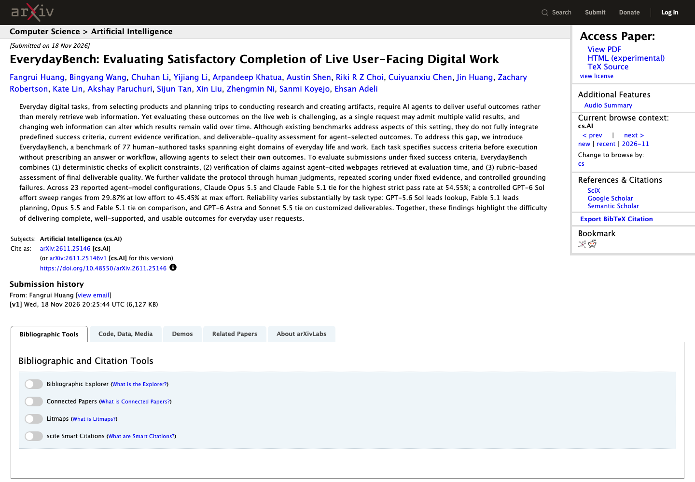
20日首次公告的EverydayBench预印本包含八类生活与工作场景的77项人工任务，事先给成功条件，再结合确定性检查、评分时重新抓取引用网页与交付物质量评分。所测23个代理和模型组合中，Claude Opus 5.5与Fable 5.1最高严格通过率均为54.55%；受控GPT-6 Sol思考档位实验从低档29.87%到最高档45.45%。稿件18日提交，这些是特定任务和运行配置的结果，不能当成今天所有版本的统一排名，网页变化也会改变证据。
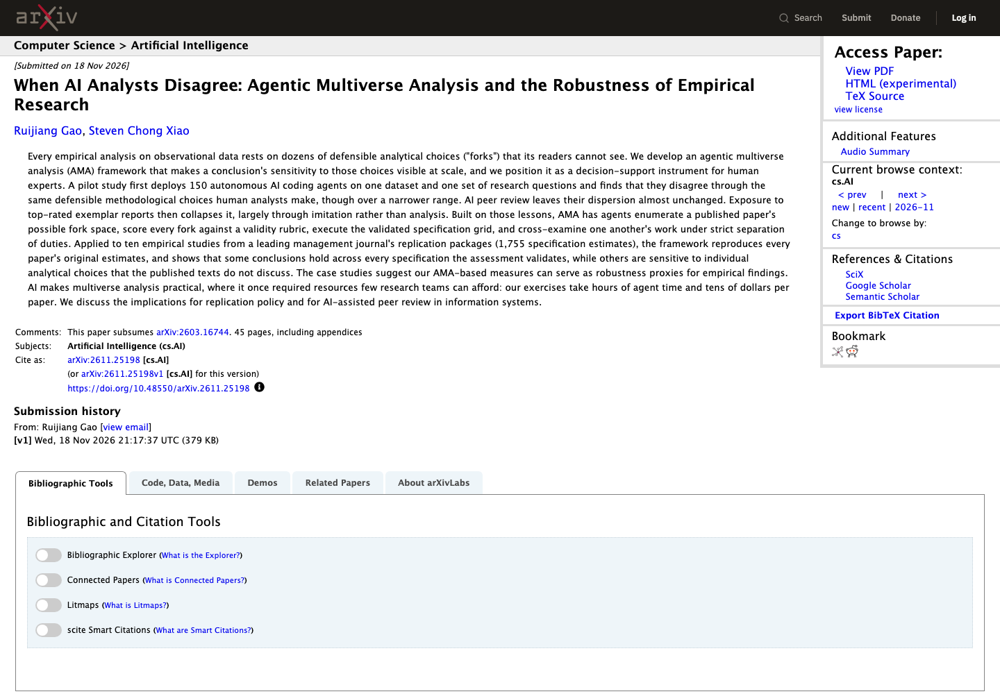
20日首次公告的预印本，先令150个AI编码代理分析同一数据与问题，发现合理的方法选择仍产生分歧；简单AI互评几乎未减少分歧，提供高分范文后则主要因模仿而趋同。作者据此设计多规格分析流程，在十篇管理学研究的复现材料上运行1755个规格估计，复现原估计并检查结论对不同分析选择的敏感度。18日投稿、20日公告；这是一组有限案例的稳健性辅助工具，不能由此判定整篇论文造假或替代专家判断。
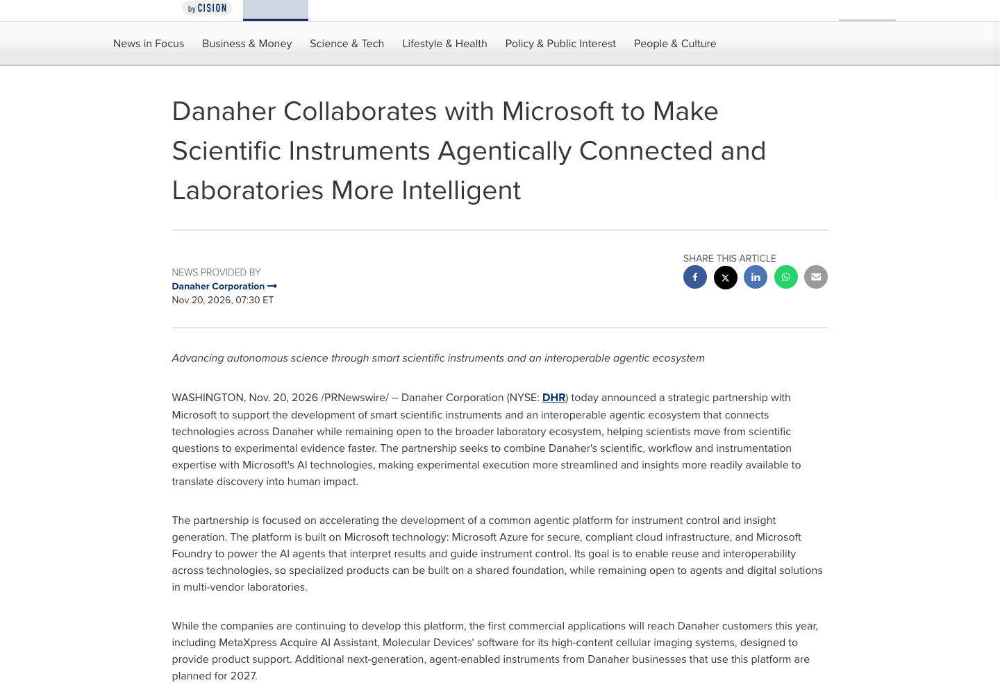
丹纳赫于20日宣布与微软合作，基于Azure与Foundry开发可互操作的实验仪器代理平台，目标包括实验规划、受限硬件控制、质量检查及供科学家复核的后续建议。首批商业应用计划今年交付，包括提供产品支持的MetaXpress Acquire AI Assistant，更多代理仪器计划2027年推出。公司初步内部测试称，新手使用AI辅助Leica显微镜时，实验耗时最多减少83%、步骤最多减少68%；这是特定内部测试的最高值，平台仍在开发，公告未披露交易金额。
SatSure于20日宣布，IN-SPACe支持、SIDBI Venture Capital管理的Antariksh基金投入6亿卢比，领投其20亿卢比B轮的首次交割。整轮仍在推进，拟由16.5亿卢比新股、2.5亿风险债务及1亿老股交易构成，预计至12月滚动完成。资金用于光学载荷、地球观测星座、Dhaarini模型与国际业务，载荷轨道飞行目标为2027年。公司称首次交割后累计机构资本42.7亿卢比，不含政府补助；20亿不是本次已全部到账的数额，老股交易也不能全当作公司新增现金。
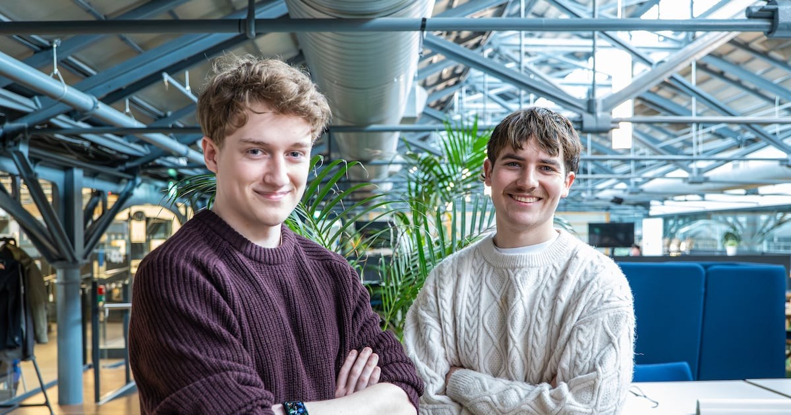
《爱尔兰时报》20日原创报道，Hoplite获550万美元融资，支持方包括Y Combinator、Stripe创始人John与Patrick Collison、Des Traynor、Relational Capital、Upside Ventures及Theo Browne。平台把代码和既有设置接入云端，降低持续运行编码代理所需的环境管理负担；资金将用于工程招聘和扩大用户。报道援引公司称已有18000名用户、处理8240亿token，这些使用量不是收入或已合并代码数；文章没有披露估值，也未承诺所有代理产物可直接上线。
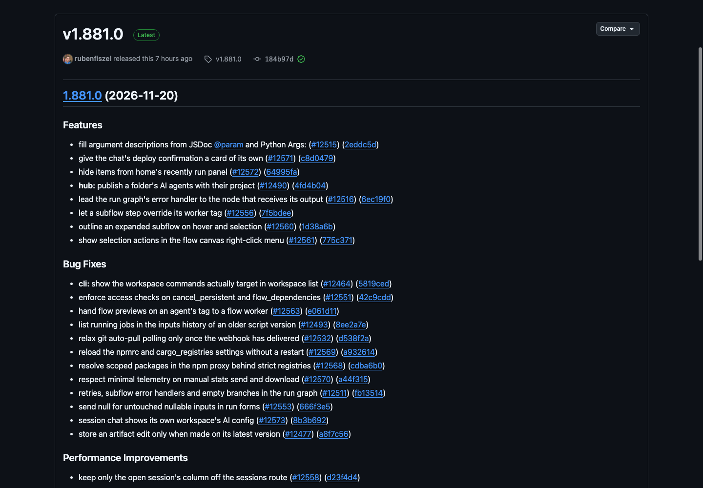
Windmill 1.881.0于20日发布，可从JSDoc参数注释和Python Args段落填入参数说明，部署确认在聊天中有独立卡片，项目发布可带上文件夹里的AI代理。版本还修复取消持久任务及流程依赖接口的访问检查，改进子流程、重试和错误处理的运行图显示。新增的是说明提取、界面与权限修正，已有注释的准确性仍由原代码决定，不能把自动填说明理解为自动验证程序行为。